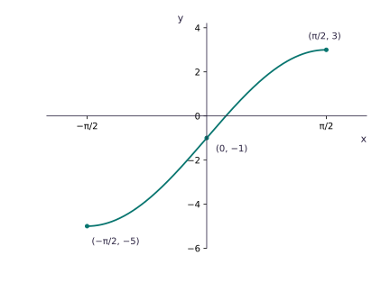
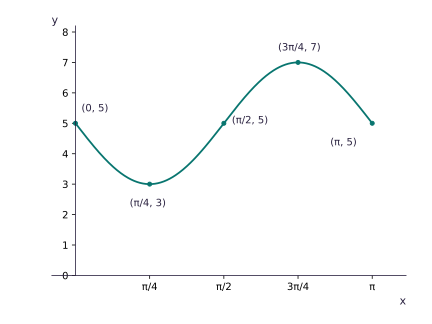

Rational composite becomes linear
f(x)=4/x−2, x>0; g(x)=4/(5x+2), x≥0.
- fg(x)=4/[4/(5x+2)]−2=(5x+2)−2=5x.
- Since x≥0, 5x≥0.
- fg(x)=5x and its range is fg(x)≥0.
A composite can have a smaller range than either function suggests. Form it, read its legal inputs, solve carefully, and reject roots that do not belong.
f(x)=4/x−2, x>0; g(x)=4/(5x+2), x≥0.
Your turn · 1
If a quadratic equation gives x=−2 and x=4 but the composite domain is x>0, which roots remain?
f(x)=1/(x²−9), g(x)=2x−3, x>3. Solve fg(x)=1/7.
f(x)=2−3cos x, g(x)=x/2, 0≤x≤2π. Solve fg(x)=1.
For f(x)=4sin x−1, −π/2≤x≤π/2, endpoints are (−π/2,−5) and (π/2,3); y-intercept is (0,−1); x-intercept is x=arcsin(1/4)≈0.253. Join with a smooth sine shape.
For f(x)=5−2sin2x, 0≤x≤π: endpoints are (0,5),(π,5), minimum (π/4,3), maximum (3π/4,7), and midpoint (π/2,5).
In y=a f(b(x+p))+q, assume a and b are non-zero. The vertical scale is |a|, with reflection in the x-axis when a<0. The horizontal scale is 1/|b|, with reflection in the y-axis when b<0. p translates by (−p,0), and q translates by (0,q).
g(x)=3(x+2)²−5 from f(x)=x²: translate by (−2,0), stretch parallel to y-axis scale factor 3, then translate by (0,−5).
If (2,−5) maps under y=4−2f(x+3), solve x+3=2 to get x=−1; y=4−2(−5)=14. New point: (−1,14).
Your turn · 2
In y=−f(x)+5, what happens first?
For f(x)=½x−2, g(x)=4+x−x²/2, fg(x)=−¼(x−1)²+¼, so fg(x)≤¼.
For f(x)=x²+3, x>0, g(x)=2x+1, x>−1/2: solving fg−3=gf gives roots 1 and −3; reject −3, so x=1.
For f(x)=2/(x²−4), g(x)=3x−1, x>3, solving fg=2/5 gives candidates 4/3 and −2/3, both outside the domain: no solution.
For f(x)=x²−4x+3, x>5, g(x)=1/(x+1), x>−1, gf(x)=1/(x−2)²; since x>5, 0<gf(x)<1/9.
For f(x)=3x²+12x−2 and g(x)=2x+3, g⁻¹(f(x))=(3x²+12x−5)/2. Setting zero gives x=(−6±√51)/3.
f(x)=½x−2, g(x)=4+x−x²/2. Find fg(x) and its range.
f(x)=x²+3, x>0; g(x)=2x+1, x>−½. Solve fg(x)−3=gf(x).
f(x)=1/(x²−q), g(x)=2x−3, x>3. Solve fg(x)=1/7.
f(x)=2x²+8x+1, g(x)=2x+1. Find g⁻¹(f(x)) and solve it equal to 0.

